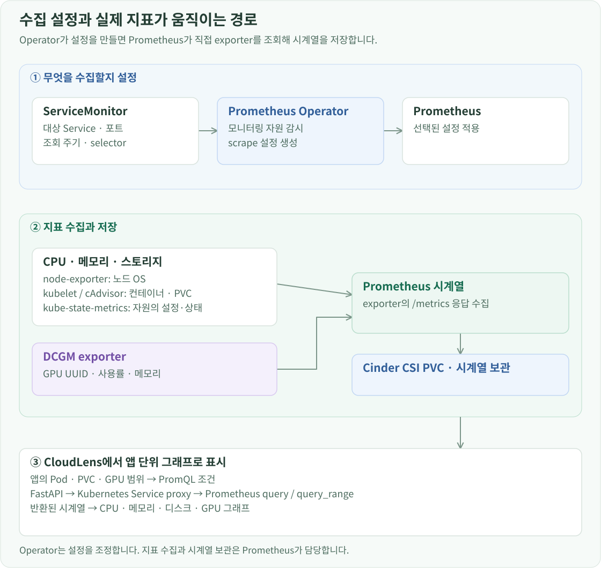

구축 개요
OpenStack Flavor의 CPU·메모리는 VM에 할당한 크기이고, Kubernetes requests는 스케줄러가 Pod를 배치할 때 계산하는 요청량입니다. 실제 실행 중인 사용량은 별도의 지표가 필요합니다. 이 환경은 Prometheus로 노드·컨테이너·PVC 지표를 수집하고, NVIDIA DCGM exporter로 GPU 사용률과 메모리를 수집합니다.
Prometheus Operator가 수집 구성을 관리
kube-prometheus-stack 91.5.0을 monitoring Namespace에 설치합니다. Prometheus Operator가 Prometheus 인스턴스와 수집 대상을 관리하고, ServiceMonitor가 어떤 Service에서 어떤 주기로 지표를 읽을지 선언합니다.

현재 Prometheus는 release: cloudlens-monitoring 라벨을 가진 ServiceMonitor를 모든 Namespace에서 선택합니다. GPU Operator의 exporter도 이 라벨로 연결됩니다.
prometheus:
prometheusSpec:
replicas: 1
retention: 3d
retentionSize: 8GB
scrapeInterval: 30s
scrapeTimeout: 10s
serviceMonitorSelector:
matchLabels:
release: cloudlens-monitoring
serviceMonitorNamespaceSelector: {}
시계열은 cinder-ssd StorageClass의 10 GiB PVC에 저장합니다. 보존 기간은 3일, 크기 한도는 8 GB입니다. Grafana·Alertmanager·기본 경보 규칙은 활성화하지 않고, 조회한 지표는 CloudLens에서 표시합니다.
배포 저장소의 infra/helm/monitoring에서 values를 적용합니다.
helm --kube-context openstack-k8s-llmd-lab upgrade --install \
cloudlens-monitoring kube-prometheus-stack \
--repo https://prometheus-community.github.io/helm-charts \
--version 91.5.0 --namespace monitoring --create-namespace \
--values values.yaml --wait --timeout 10m
GPU Operator values에서 serviceMonitor.enabled=true를 사용할 때는 이 차트가 제공하는 ServiceMonitor CRD가 먼저 존재해야 합니다. 처음 구축할 때 Prometheus Operator를 설치하고 GPU exporter의 수집 설정을 연결하는 순서로 적용합니다.
ServiceMonitor에 지표가 저장되는 것은 아닙니다. 어떤 Service의 어느 포트·경로를 얼마나 자주 읽을지 선언하고, Prometheus Operator가 이를 실제 scrape 설정으로 반영합니다. Prometheus가 주기적으로 exporter의 /metrics를 읽어 시계열을 저장합니다. GPU exporter의 ServiceMonitor에는 release: cloudlens-monitoring 라벨을 지정해 이 Prometheus의 수집 대상으로 연결했습니다.
자원마다 지표를 제공하는 위치
node-exporter는 각 노드에서 운영체제의 CPU, 메모리, 파일시스템 정보를 제공합니다. kubelet의 cAdvisor 지표는 컨테이너 CPU와 메모리 사용량을 제공합니다. kube-state-metrics는 Kubernetes API에서 Pod·컨트롤러의 상태와 선언된 자원량을 지표로 만듭니다.
| 보고 싶은 값 | 지표 제공자 | 대표 지표 |
|---|---|---|
| 노드 CPU 사용 | node-exporter | node_cpu_seconds_total |
| 노드 메모리 여유 | node-exporter | node_memory_MemAvailable_bytes |
| 노드 파일시스템 여유 | node-exporter | node_filesystem_avail_bytes |
| 컨테이너 CPU·메모리 | kubelet/cAdvisor | container_cpu_usage_seconds_total, container_memory_working_set_bytes |
| PVC 사용·용량 | kubelet | kubelet_volume_stats_used_bytes, kubelet_volume_stats_capacity_bytes |
| GPU 사용률·메모리 | DCGM exporter | DCGM_FI_DEV_GPU_UTIL, DCGM_FI_DEV_FB_USED |
CPU 사용 시간은 누적 카운터이므로 일정 구간의 증가율인 rate()로 코어 사용량을 구합니다. 메모리와 디스크는 해당 시각의 gauge를 사용합니다. 여러 컨테이너를 가진 앱은 소속 Pod·컨테이너별 값을 합산합니다.
DRA GPU를 DCGM 지표에 연결
GPU Operator의 dcgmExporter를 활성화하고 DRA 연동을 켭니다. Pod UID도 지표 라벨에 포함하도록 설정해 같은 이름으로 다시 생성된 Pod를 구분합니다.
dcgmExporter:
enabled: true
env:
- name: DCGM_EXPORTER_KUBERNETES_ENABLE_DRA
value: 'true'
enablePodUID: true
serviceMonitor:
enabled: true
honorLabels: true
interval: 15s
additionalLabels:
release: cloudlens-monitoring
exporter의 수집 항목에는 GPU 사용률, 메모리 대역폭 사용률, framebuffer의 전체·사용·여유·예약 메모리, 온도와 전력을 지정합니다. 카드 식별자는 GPU UUID를 사용합니다.
GPU 사용률과 VRAM 사용량은 장치의 측정값입니다. DRA의 Claim·Pod 참조는 누가 그 장치를 할당받았는지를 연결합니다. CloudLens는 이 두 정보를 합쳐 카드별 사용량과 사용하는 애플리케이션을 표시합니다. 같은 카드가 여러 라벨 조합으로 반환되면 UUID로 중복을 제거해 카드 메모리가 여러 번 합산되지 않게 합니다.
포털에서 애플리케이션 사용량 조회
Prometheus는 cloudlens-monitoring-prometheus:9090이라는 ClusterIP Service로 제공합니다. CloudLens 서버는 등록된 Kubernetes 연결의 인증정보로 API 서버의 Service proxy를 호출합니다.
CloudLens 서버
→ Kubernetes API · services/proxy
→ monitoring/cloudlens-monitoring-prometheus:9090
→ /api/v1/query 또는 /api/v1/query_range
따라서 Prometheus를 외부 NodePort로 공개할 필요가 없습니다. Kubernetes 계정에는 Service proxy 조회 권한이 필요합니다.
통합 현황에서 앱을 선택하면 소유 관계로 해당 앱의 Pod 목록을 구하고, Namespace·Pod 조건으로 Prometheus를 조회합니다. CPU·메모리는 그 앱의 컨테이너, PVC는 앱이 참조하는 볼륨, GPU는 앱의 할당 관계에 연결된 카드에서 가져옵니다. Pod와 워크로드 상세 화면의 대시보드도 같은 수집 데이터를 사용합니다.
애플리케이션 사용량은 그 앱에 속한 Pod·컨테이너와 PVC·GPU를 찾아 집계합니다. 이때 node-exporter가 보는 노드는 물리 OpenStack 호스트가 아니라 Kubernetes VM입니다. 물리 호스트의 할당 여유는 OpenStack에서, 앱과 Pod의 실제 사용량은 Prometheus에서 가져와 서로 다른 계층의 정보를 연결했습니다.
설치한 서비스의 버전, 저장소와 접속 주소는 구성 명세에서 확인할 수 있습니다.